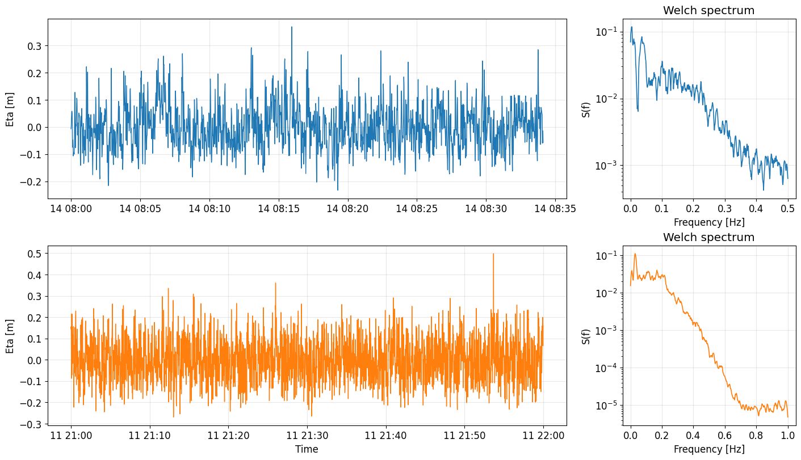

%load_ext autoreload
%autoreload 2
Walkthrough Example - Spectral Analysis#
Hint
Before using the WaveSpectralAnalyzer class, make sure you have the necessary data and dependencies installed. This example assumes you have time series data from an AQUAlogger and a RBR device.
Users are referred to the THIS LINK for a installation guide of the oceanicospy package and its dependencies.
This example demonstrates how to use the WaveSpectralAnalyzer class from the oceanicospy.analysis.spectral module to perform spectral analysis on wave data. We will compute the power spectral density of a two different surface level time series recorded with an AQUAlogger and a RBR device.
Importing required modules and subpackages#
For this example, the modules and packages from oceanicospy are imported, as well as some standard libraries for plotting and data manipulation.
from datetime import datetime, timedelta
import matplotlib as mpl
import matplotlib.pyplot as plt
import numpy as np
mpl.rcParams["font.size"] = 12
from oceanicospy.observations import pressure_sensors
from oceanicospy.analysis import spectral
---------------------------------------------------------------------------
ModuleNotFoundError Traceback (most recent call last)
Cell In[3], line 2
1 from oceanicospy.observations import pressure_sensors
----> 2 from oceanicospy.analysis import spectral
File ~/Documents/projects/oceanicospy/oceanicospy/analysis/__init__.py:2
1 from .spectral import WaveSpectralAnalyzer
----> 2 from .temporal import WaveTemporalAnalyzer
File ~/Documents/projects/oceanicospy/oceanicospy/analysis/temporal.py:3
1 import numpy as np
2 import pandas as pd
----> 3 from PyEMD import CEEMDAN,EEMD,EMD
4 from scipy.signal import resample,detrend
6 from ..utils import wave_props
ModuleNotFoundError: No module named 'PyEMD'
Pressure data#
Deployment data from pressure sensors is loaded as a dictionary, while the sensor data is read from the corresponding sensor files. It has to be clarified that sensors are not deployed either at the same time or location.
measurement_pressure_sensors_paths = ['../data/observations/AQ/','../data/observations/RBR/']
sampling_AQ = dict(anchoring_depth=1, sensor_height=0.2, sampling_freq=1, burst_length_s=2048,
start_time=datetime(2025,5,9,10,0,0),end_time=datetime(2025,5,19,18,0,0)-timedelta(seconds=1))
sampling_RBR = dict(anchoring_depth=1, sensor_height=0.2, sampling_freq=2, burst_length_s=7200,
start_time=datetime(2025,5,9,10,0,0),end_time=datetime(2025,5,19,18,0,0)-timedelta(seconds=0.5))
For further information about how to upload the sensor data using oceanicospy, please refer to the data loading example.
sampling_data = [sampling_AQ,sampling_RBR]
metadata_list=['AQ','RBR']
dict_raw_measurements = dict()
dict_clean_measurements = dict()
for idx,measurement_path in enumerate(measurement_pressure_sensors_paths):
if 'AQ' in measurement_path:
object_device = pressure_sensors.AQUAlogger(measurement_path, sampling_data[idx])
else:
object_device = pressure_sensors.RBR(measurement_path,sampling_data[idx])
raw_data = object_device.get_raw_records()
clean_data = object_device.get_clean_records()
dict_raw_measurements[metadata_list[idx]] = raw_data
dict_clean_measurements[metadata_list[idx]] = clean_data
A quick look at the data shows that the pressure signal is sampled at 1Hz for the AQ sensor and 2Hz for the RBR sensor.
dict_clean_measurements['RBR'].head()
| pressure[bar] | depth[m] | burstId | eta[m] | |
|---|---|---|---|---|
| date | ||||
| 2025-05-09 10:00:00.000 | 1.241829 | 2.267149 | 1 | 0.117985 |
| 2025-05-09 10:00:00.500 | 1.239702 | 2.246051 | 1 | 0.096886 |
| 2025-05-09 10:00:01.000 | 1.235314 | 2.202530 | 1 | 0.053365 |
| 2025-05-09 10:00:01.500 | 1.233978 | 2.189276 | 1 | 0.040110 |
| 2025-05-09 10:00:02.000 | 1.234466 | 2.194119 | 1 | 0.044954 |
| ... | ... | ... | ... | ... |
| 2025-05-19 17:59:57.500 | 1.228489 | 2.134836 | 248 | -0.044336 |
| 2025-05-19 17:59:58.000 | 1.228343 | 2.133389 | 248 | -0.045786 |
| 2025-05-19 17:59:58.500 | 1.226372 | 2.113838 | 248 | -0.065340 |
| 2025-05-19 17:59:59.000 | 1.226182 | 2.111960 | 248 | -0.067221 |
| 2025-05-19 17:59:59.500 | 1.231584 | 2.165540 | 248 | -0.013645 |
1785600 rows × 4 columns
dict_clean_measurements['AQ'].head()
| pressure[bar] | Raw2 | depth[m] | depth_aux[m] | burstId | eta[m] | |
|---|---|---|---|---|---|---|
| date | ||||||
| 2025-05-09 10:00:00 | 1.245722 | 0 | 3.136509 | 2.307327 | 1 | 0.052596 |
| 2025-05-09 10:00:01 | 1.244709 | 0 | 3.124966 | 2.297273 | 1 | 0.041052 |
| 2025-05-09 10:00:02 | 1.237181 | 0 | 3.039040 | 2.222556 | 1 | -0.044874 |
| 2025-05-09 10:00:03 | 1.243695 | 0 | 3.113418 | 2.287209 | 1 | 0.029503 |
| 2025-05-09 10:00:04 | 1.253249 | 0 | 3.222086 | 2.382034 | 1 | 0.138170 |
| ... | ... | ... | ... | ... | ... | ... |
| 2025-05-19 16:34:03 | 1.239498 | 0 | 3.065513 | 2.245553 | 124 | -0.003209 |
| 2025-05-19 16:34:04 | 1.242248 | 0 | 3.096910 | 2.272847 | 124 | 0.028177 |
| 2025-05-19 16:34:05 | 1.237905 | 0 | 3.047316 | 2.229742 | 124 | -0.021427 |
| 2025-05-19 16:34:06 | 1.243406 | 0 | 3.110117 | 2.284341 | 124 | 0.041363 |
| 2025-05-19 16:34:07 | 1.239063 | 0 | 3.060552 | 2.241236 | 124 | -0.008213 |
253952 rows × 6 columns
Using the WaveSpectralAnalyzer class#
First, we need to instanciate the WaveSpectralAnalyzer class, which will allow us to make the spectral analysis for the pressure data. We need to provide the measurement signal and the sampling data as arguments.
WaveSpectralAnalyzer will look for measurement signal with a column named “eta[m]”, which is the standard name for the sea surface elevation in oceanicospy. If the column name is different, it can be specified as an argument when instanciating the class.
help(spectral.WaveSpectralAnalyzer.get_spectra_and_params_for_bursts)
Help on function get_spectra_and_params_for_bursts in module oceanicospy.analysis.spectral:
get_spectra_and_params_for_bursts(self, method, kp_correction=True, ig_split=False, freq_split=None, window_type=None, window_length=None, overlap=None, smoothing_bins=None)
Compute wave spectra and integral parameters for each burst in the measurement signal.
Parameters
----------
method : str
Spectrum computation method: 'fft' or 'welch'.
kp_correction : bool, optional
Whether to apply Kp pressure correction. Default is True.
ig_split : bool, optional
Whether to compute infragravity and wind wave Hm0 separately. Default is False.
freq_split : float, optional
Frequency that separates infragravity from short waves (required if ig_split is True). Default is None.
window_type : str, optional
Window type for Welch method (e.g., 'hamming', 'hann'). Default is None.
window_length : int, optional
Window length for Welch method in samples. Default is None.
overlap : int, optional
Number of overlapping samples for Welch method. Default is None.
smoothing_bins : int, optional
Number of bins for moving-average smoothing (Welch only). Default is None.
Returns
-------
wave_spectra_data : dict
Dictionary with keys:
- 'S': ndarray of shape (n_bursts, n_freqs) containing power spectral densities.
- 'freq': ndarray of frequency values.
- 'dir': empty list (placeholder for directional info).
- 'time': DatetimeIndex of hourly timestamps.
wave_params_data : pd.DataFrame
Wave parameters indexed by time, with columns:
- 'Hm0': Zero-moment wave height [m].
- 'Hrms': Root-mean-square wave height [m].
- 'Hmean': Mean wave height [m].
- 'Tp': Peak period [s].
- 'Tm01': Mean period (first moment) [s].
- 'Tm02': Mean period (second moment) [s].
- 'Hm0_ig': Infragravity wave height [m] (if ig_split is True).
- 'Hm0_sw': Short wave height [m] (if ig_split is True).
Welch’s and FFT method#
dict_spectra_welch = dict()
dict_integral_params_welch = dict()
dict_spectra_fft = dict()
dict_integral_params_fft = dict()
for idx,metadata in enumerate(metadata_list):
SpectralAnalyzer = spectral.WaveSpectralAnalyzer(dict_clean_measurements[metadata],sampling_data[idx])
print(type(SpectralAnalyzer))
spectra_welch,params_welch = SpectralAnalyzer.get_spectra_and_params_for_bursts(method='welch',kp_correction=False,ig_split=True,
freq_split=0.04, window_type='hamming',
window_length=1024,overlap=512,smoothing_bins=6)
spectra_fft,params_fft = SpectralAnalyzer.get_spectra_and_params_for_bursts(method='fft',kp_correction=False,ig_split=True,
freq_split=0.04)
dict_spectra_welch[metadata_list[idx]] = spectra_welch
dict_integral_params_welch[metadata_list[idx]] = params_welch
dict_spectra_fft[metadata_list[idx]] = spectra_fft
dict_integral_params_fft[metadata_list[idx]] = params_fft
<class 'oceanicospy.analysis.spectral.WaveSpectralAnalyzer'>
<class 'oceanicospy.analysis.spectral.WaveSpectralAnalyzer'>
Plotting random bursts and their corresponding spectra#
The time series and spectra for a random burst are plotted for each sensor and method. The spectra are plotted in log scale to better visualize the different frequency components.
burst_to_plot = 60
AQ_df = dict_clean_measurements["AQ"]
RBR_df = dict_clean_measurements["RBR"]
AQ_burst = AQ_df[AQ_df["burstId"] == burst_to_plot]
RBR_burst = RBR_df[RBR_df["burstId"] == burst_to_plot]
AQ_freq = dict_spectra_welch["AQ"]["freq"]
RBR_freq = dict_spectra_welch["RBR"]["freq"]
AQ_S = dict_spectra_welch["AQ"]["S"][burst_to_plot-1]
RBR_S = dict_spectra_welch["RBR"]["S"][burst_to_plot-1]
fig = plt.figure(figsize=(14, 8), constrained_layout=True)
gs = fig.add_gridspec(2, 4)
ax_AQ_timeseries = fig.add_subplot(gs[0, 0:3])
ax_AQ_spectra = fig.add_subplot(gs[0, 3])
ax_RBR_timeseries = fig.add_subplot(gs[1, 0:3])
ax_RBR_spectra = fig.add_subplot(gs[1, 3])
# AQ time series
ax_AQ_timeseries.plot(AQ_burst["eta[m]"], lw=1.0)
ax_AQ_timeseries.set_ylabel("Eta [m]")
ax_AQ_timeseries.grid(True, alpha=0.3)
# AQ spectrum
ax_AQ_spectra.plot(AQ_freq, AQ_S, lw=1.2)
ax_AQ_spectra.set(xlabel="Frequency [Hz]", ylabel="S(f)", title="Welch spectrum", yscale="log")
ax_AQ_spectra.grid(True, alpha=0.3)
# RBR time series
ax_RBR_timeseries.plot(RBR_burst.index, RBR_burst["eta[m]"], lw=1.0, color="tab:orange")
ax_RBR_timeseries.set(xlabel="Time", ylabel="Eta [m]")
ax_RBR_timeseries.grid(True, alpha=0.3)
# RBR spectrum
ax_RBR_spectra.plot(RBR_freq, RBR_S, lw=1.2, color="tab:orange")
ax_RBR_spectra.set(xlabel="Frequency [Hz]", ylabel="S(f)", title="Welch spectrum", yscale="log")
ax_RBR_spectra.grid(True, alpha=0.3)
# plt.show()

Wavelets transform#
for idx,metadata in enumerate(metadata_list):
SpectralAnalyzer = spectral.WaveSpectralAnalyzer(dict_clean_measurements[metadata],sampling_data[idx])
print(type(SpectralAnalyzer))
if 'AQ' in metadata:
pass
# coef_wavelets,freqs_wavelets = SpectralAnalyzer.compute_wavelet_scalograms_for_bursts(window_length=sampling_data[idx]['burst_length_s'],overlap=1,
# mother_wavelet='cmor1.5-1.0',points_scale=50)
# coef_wavelets = np.stack(coef_wavelets, axis=0)
# coef_wavelets_full = coef_wavelets.transpose(1, 0, 2).reshape(len(freqs_wavelets), -1)
else:
coef_wavelets_full,freqs_wavelets = SpectralAnalyzer.compute_wavelet_scalogram(mother_wavelet='cmor1.5-1.0',points_scale=50)
<class 'oceanicospy.analysis.spectral.WaveSpectralAnalyzer'>
<class 'oceanicospy.analysis.spectral.WaveSpectralAnalyzer'>
Plotting the wavelet scalogram#
coef_wavelets_full.shape
(50, 1785600)
# This cell can take ages
# fig,ax = plt.subplots(figsize=(14, 6))
# im = ax.imshow(10*np.log10(coef_wavelets_full), aspect='auto',
# extent=[0, coef_wavelets_full.shape[1], freqs_wavelets[-1], freqs_wavelets[0]])
# # ax.set_yscale('log')
# # ax.set_xlabel('Time [s]')
# # ax.set_ylabel('Frequency [Hz]')